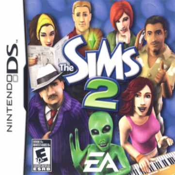

Welcome to Sim2Editor
What is this?
Sim2Editor is a work in progress The Sims 2 Game Boy Advance and Nintendo DS Save Editor.
For a list of features the Save Editor has to offer, see the Features page.
Supported Games
You can find a list of supported games including regions below.
Supported Regions:
Europe
USA

Supported Regions:
Europe
USA
Japan
Others
You can also take a look at the Strangetown page, which is a community for The Sims 2 Game Boy Advance and Nintendo DS!
That is also the place for support about Sim2Editor and suggestions.